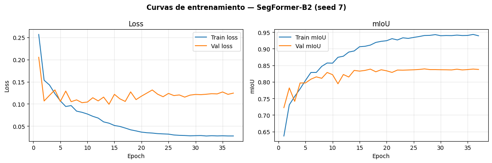
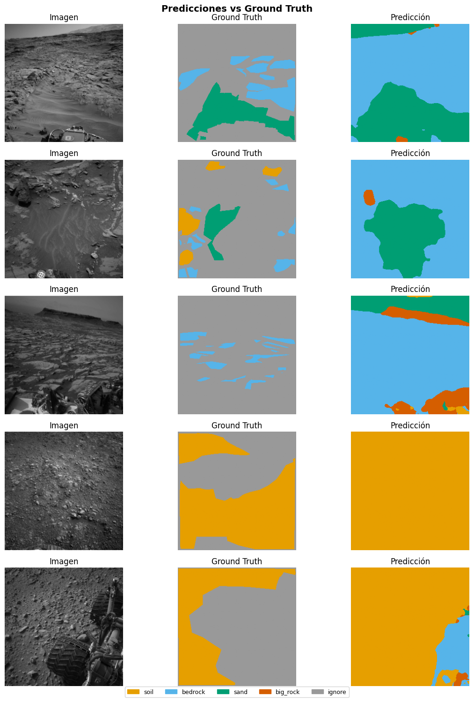

05f - SegFormer-B2#
Paper: Xie et al., SegFormer: Simple and Efficient Design for Semantic Segmentation with Transformers, NeurIPS 2021. arXiv:2105.15203
Arquitectura: MiT-B2 encoder (HuggingFace nvidia/mit-b2) + decoder MLP ligero. La salida del decoder es H/4×W/4 y se upsamplea bilinearmente a 256×256.
Hiperparámetros:
Parámetro |
Valor |
|---|---|
Backbone |
MiT-B2 (pretrained, HuggingFace) |
Parámetros |
~27.35M |
Loss |
CrossEntropyLoss (ignore_index=255) |
Optimizer |
AdamW (lr=6e-5, wd=0.01, betas=(0.9, 0.999)) |
Scheduler |
CosineAnnealingLR (T_max=30, eta_min=1e-6) |
Batch size |
16 |
Max epochs |
80 |
Early stopping |
patience=7 sobre val mIoU |
Seeds |
[42, 123, 7] |
Referencia histórica (subset 2.100 imgs — DEPRECADO):
mIoU = 0.7592 ± 0.0078 seed: 0.7547 | 0.7701 | 0.7526
0. Imports y configuración#
import sys
from pathlib import Path
# ── Compatibilidad local / Google Colab ──────────────────────────────────────
try:
from google.colab import drive
drive.mount('/content/drive')
NOTEBOOKS_DIR = Path('/content/drive/MyDrive/ai4mars_DL-v3/notebooks')
sys.path.append(str(NOTEBOOKS_DIR))
print("Entorno: Google Colab")
except ImportError:
print("Entorno: local")
import torch
import torch.nn as nn
import torch.nn.functional as F
from transformers import SegformerForSemanticSegmentation
from mars_utils import (
# Rutas y constantes
NUM_CLASSES, IGNORE_INDEX, BATCH_SIZE, SEEDS,
PROCESSED_DIR, BENCHMARK_CSV
# Datos
load_split, load_norm_stats,
# Entrenamiento
run_multi_seed,
# Resultados
append_benchmark_results, print_summary_table, plot_best_seed_curves,
# Visualización
visualize_predictions,
# Utilidades
count_parameters, set_seed,
)
DEVICE = torch.device('cuda' if torch.cuda.is_available() else 'cpu')
print(f"Device: {DEVICE}")
if DEVICE.type == 'cuda':
print(f"GPU: {torch.cuda.get_device_name(0)}")
print(f"VRAM: {torch.cuda.get_device_properties(0).total_memory / 1e9:.1f} GB")
Entorno: local
Device: cuda
GPU: NVIDIA GeForce RTX 4050 Laptop GPU
VRAM: 6.4 GB
1. Carga de datos#
df_train, df_val, df_gold = load_split()
mean, std = load_norm_stats()
print(f"Train: {len(df_train)} imágenes")
print(f"Val: {len(df_val)} imágenes")
print(f"Gold: {len(df_gold)} imágenes")
print(f"Normalización — mean: {mean} | std: {std}")
✅ Split cargado — train: 4200 | val: 1800 | gold test: 322
Train: 4200 imágenes
Val: 1800 imágenes
Gold: 322 imágenes
Normalización — mean: [0.2303263779898021, 0.2303263779898021, 0.2303263779898021] | std: [0.10591342097577364, 0.10591342097577364, 0.10591342097577364]
2. Definición del modelo#
Se carga nvidia/mit-b2 desde HuggingFace con pesos preentrenados en ImageNet-1k.
El decoder MLP interno de SegFormer se adapta a NUM_CLASSES=4.
MODEL_ID = "nvidia/mit-b2"
def build_segformer():
"""
Devuelve una instancia de SegFormer-B2 preentrenada adaptada a 4 clases.
La salida del forward es un tensor [B, 4, H/4, W/4] que se upsamplea
bilinearmente a [B, 4, 256, 256] en el wrapper.
"""
model = SegformerForSemanticSegmentation.from_pretrained(
MODEL_ID,
num_labels=NUM_CLASSES,
ignore_mismatched_sizes=True, # reemplaza la cabeza clasificadora
)
return SegFormerWrapper(model)
class SegFormerWrapper(nn.Module):
"""
Wrapper que adapta la salida de HuggingFace SegFormer al formato
esperado por mars_utils: tensor [B, C, H, W] a resolución completa.
HuggingFace devuelve logits en H/4×W/4. Los upsampleamos bilinearmente
a IMG_SIZE×IMG_SIZE (256×256) para que MetricsAccumulator y las losses
trabajen a la misma resolución que las máscaras.
"""
def __init__(self, hf_model, img_size: int = 256):
super().__init__()
self.model = hf_model
self.img_size = img_size
def forward(self, pixel_values: torch.Tensor) -> torch.Tensor:
out = self.model(pixel_values=pixel_values)
logits = out.logits # [B, 4, H/4, W/4]
logits = F.interpolate(
logits,
size=(self.img_size, self.img_size),
mode='bilinear',
align_corners=False,
) # [B, 4, 256, 256]
return logits
# Verificación rápida de la arquitectura
set_seed(42)
_model = build_segformer()
print(f"Parámetros totales: {count_parameters(_model):.2f}M")
_dummy = torch.randn(2, 3, 256, 256)
_out = _model(_dummy)
print(f"Input shape: {_dummy.shape}")
print(f"Output shape: {_out.shape} (esperado: [2, 4, 256, 256])")
del _model, _dummy, _out
[transformers] You passed `num_labels=4` which is incompatible to the `id2label` map of length `1000`.
Warning: You are sending unauthenticated requests to the HF Hub. Please set a HF_TOKEN to enable higher rate limits and faster downloads.
[transformers] SegformerForSemanticSegmentation LOAD REPORT from: nvidia/mit-b2
Key | Status |
--------------------------------------------------------+------------+-
classifier.weight | UNEXPECTED |
classifier.bias | UNEXPECTED |
decode_head.linear_projections.{0, 1, 2, 3}.proj.bias | MISSING |
decode_head.linear_projections.{0, 1, 2, 3}.proj.weight | MISSING |
decode_head.classifier.weight | MISSING |
decode_head.batch_norm.num_batches_tracked | MISSING |
decode_head.batch_norm.weight | MISSING |
decode_head.batch_norm.running_var | MISSING |
decode_head.batch_norm.bias | MISSING |
decode_head.classifier.bias | MISSING |
decode_head.linear_fuse.weight | MISSING |
decode_head.batch_norm.running_mean | MISSING |
Notes:
- UNEXPECTED: can be ignored when loading from different task/architecture; not ok if you expect identical arch.
- MISSING: those params were newly initialized because missing from the checkpoint. Consider training on your downstream task.
Parámetros totales: 27.35M
Input shape: torch.Size([2, 3, 256, 256])
Output shape: torch.Size([2, 4, 256, 256]) (esperado: [2, 4, 256, 256])
from mars_utils import DATA_DIR
print(list((DATA_DIR / "images_256").iterdir())[:3])
print(list((DATA_DIR / "masks_256").iterdir())[:3])
[WindowsPath('C:/Users/User/Documents/DeepLearning/ai4mars_DL-v3/data/images_256/NLA_397681586EDR_F0020000AUT_04096M1.jpg'), WindowsPath('C:/Users/User/Documents/DeepLearning/ai4mars_DL-v3/data/images_256/NLA_397681801EDR_F0020000AUT_04096M1.jpg'), WindowsPath('C:/Users/User/Documents/DeepLearning/ai4mars_DL-v3/data/images_256/NLA_397681867EDR_F0020000AUT_04096M1.jpg')]
[WindowsPath('C:/Users/User/Documents/DeepLearning/ai4mars_DL-v3/data/masks_256/NLA_397681586EDR_F0020000AUT_04096M1.png'), WindowsPath('C:/Users/User/Documents/DeepLearning/ai4mars_DL-v3/data/masks_256/NLA_397681801EDR_F0020000AUT_04096M1.png'), WindowsPath('C:/Users/User/Documents/DeepLearning/ai4mars_DL-v3/data/masks_256/NLA_397681867EDR_F0020000AUT_04096M1.png')]
3. Configuración de hiperparámetros#
# ── Loss ─────────────────────────────────────────────────────────────────────
def criterion_fn():
return nn.CrossEntropyLoss(ignore_index=IGNORE_INDEX)
# ── Optimizer ────────────────────────────────────────────────────────────────
def optimizer_fn(params):
return torch.optim.AdamW(
params,
lr=6e-5,
weight_decay=0.01,
betas=(0.9, 0.999),
)
# ── Scheduler ────────────────────────────────────────────────────────────────
def scheduler_fn(optimizer):
return torch.optim.lr_scheduler.CosineAnnealingLR(
optimizer,
T_max=30,
eta_min=1e-6,
)
print("Hiperparámetros configurados:")
print(" Loss: CrossEntropyLoss (ignore_index=255)")
print(" Optimizer: AdamW (lr=6e-5, wd=0.01, betas=(0.9, 0.999))")
print(" Scheduler: CosineAnnealingLR (T_max=30, eta_min=1e-6)")
Hiperparámetros configurados:
Loss: CrossEntropyLoss (ignore_index=255)
Optimizer: AdamW (lr=6e-5, wd=0.01, betas=(0.9, 0.999))
Scheduler: CosineAnnealingLR (T_max=30, eta_min=1e-6)
4. Entrenamiento multi-seed#
Modo rápido (fast_subset=True): usa ~200 imágenes de train y ~50 de val.
Sirve para verificar que el pipeline no tiene errores antes de correr el entrenamiento completo.
Cambiar a fast_subset=False para el entrenamiento real.
⚠️ Tiempo estimado en RTX 4050 (6GB): ~11h con
fast_subset=False.
# ── Cambiar fast_subset=False para entrenamiento real ────────────────────────
FAST_SUBSET = False # True = prueba rápida | False = entrenamiento completo
summary = run_multi_seed(
model_fn = build_segformer,
df_train = df_train,
df_val = df_val,
df_gold = df_gold,
criterion_fn = criterion_fn,
optimizer_fn = optimizer_fn,
scheduler_fn = scheduler_fn,
model_name = "SegFormer-B2",
device = DEVICE,
seeds = SEEDS,
num_epochs = 80,
patience = 10,
batch_size = BATCH_SIZE,
num_workers = 4,
use_amp = True,
fast_subset = FAST_SUBSET,
n_train_fast = 200,
n_val_fast = 50,
)
[transformers] You passed `num_labels=4` which is incompatible to the `id2label` map of length `1000`.
───────────────────────────────────────────────────────
Seed 42 | SegFormer-B2
[transformers] SegformerForSemanticSegmentation LOAD REPORT from: nvidia/mit-b2
Key | Status |
--------------------------------------------------------+------------+-
classifier.weight | UNEXPECTED |
classifier.bias | UNEXPECTED |
decode_head.linear_projections.{0, 1, 2, 3}.proj.bias | MISSING |
decode_head.linear_projections.{0, 1, 2, 3}.proj.weight | MISSING |
decode_head.classifier.weight | MISSING |
decode_head.batch_norm.num_batches_tracked | MISSING |
decode_head.batch_norm.weight | MISSING |
decode_head.batch_norm.running_var | MISSING |
decode_head.batch_norm.bias | MISSING |
decode_head.classifier.bias | MISSING |
decode_head.linear_fuse.weight | MISSING |
decode_head.batch_norm.running_mean | MISSING |
Notes:
- UNEXPECTED: can be ignored when loading from different task/architecture; not ok if you expect identical arch.
- MISSING: those params were newly initialized because missing from the checkpoint. Consider training on your downstream task.
Entrenamiento desde cero
============================================================
SegFormer-B2_seed42 | device=cuda | AMP=True
epochs=80 | patience=10 | aux_weight=0.0
============================================================
Ep 1/80 | loss=0.2566 mIoU=0.6281 | val_loss=0.1958 val_mIoU=0.7070 | rock=0.2700
Ep 2/80 | loss=0.1605 mIoU=0.7253 | val_loss=0.1276 val_mIoU=0.7661 | rock=0.3482
Ep 3/80 | loss=0.1378 mIoU=0.7575 | val_loss=0.1044 val_mIoU=0.7864 | rock=0.3749
Checkpoint periódico guardado (epoch 3)
Ep 4/80 | loss=0.1206 mIoU=0.7778 | val_loss=0.1038 val_mIoU=0.8060 | rock=0.4540
Ep 5/80 | loss=0.1059 mIoU=0.8074 | val_loss=0.1080 val_mIoU=0.8023 | rock=0.4632
Ep 6/80 | loss=0.0988 mIoU=0.8151 | val_loss=0.1230 val_mIoU=0.7980 | rock=0.4512
Checkpoint periódico guardado (epoch 6)
Ep 7/80 | loss=0.0894 mIoU=0.8334 | val_loss=0.1408 val_mIoU=0.8083 | rock=0.4971
Ep 8/80 | loss=0.0863 mIoU=0.8484 | val_loss=0.1014 val_mIoU=0.8192 | rock=0.5089
Ep 9/80 | loss=0.0781 mIoU=0.8539 | val_loss=0.1108 val_mIoU=0.8085 | rock=0.4861
Checkpoint periódico guardado (epoch 9)
Ep 10/80 | loss=0.0785 mIoU=0.8533 | val_loss=0.1038 val_mIoU=0.8235 | rock=0.5315
Ep 11/80 | loss=0.0631 mIoU=0.8779 | val_loss=0.1098 val_mIoU=0.8003 | rock=0.4211
Ep 12/80 | loss=0.0624 mIoU=0.8719 | val_loss=0.1175 val_mIoU=0.8297 | rock=0.5457
Checkpoint periódico guardado (epoch 12)
Ep 13/80 | loss=0.0649 mIoU=0.8815 | val_loss=0.1085 val_mIoU=0.8345 | rock=0.5673
Ep 14/80 | loss=0.0538 mIoU=0.8943 | val_loss=0.1290 val_mIoU=0.8313 | rock=0.5526
Ep 15/80 | loss=0.0518 mIoU=0.9010 | val_loss=0.1243 val_mIoU=0.8111 | rock=0.4965
Checkpoint periódico guardado (epoch 15)
Ep 16/80 | loss=0.0502 mIoU=0.8987 | val_loss=0.1110 val_mIoU=0.8335 | rock=0.5502
Ep 17/80 | loss=0.0450 mIoU=0.9101 | val_loss=0.1031 val_mIoU=0.8380 | rock=0.5512
Ep 18/80 | loss=0.0450 mIoU=0.9115 | val_loss=0.1080 val_mIoU=0.8330 | rock=0.5288
Checkpoint periódico guardado (epoch 18)
Ep 19/80 | loss=0.0391 mIoU=0.9228 | val_loss=0.1115 val_mIoU=0.8358 | rock=0.5444
Ep 20/80 | loss=0.0387 mIoU=0.9221 | val_loss=0.1143 val_mIoU=0.8389 | rock=0.5495
Ep 21/80 | loss=0.0356 mIoU=0.9256 | val_loss=0.1156 val_mIoU=0.8378 | rock=0.5551
Checkpoint periódico guardado (epoch 21)
Ep 22/80 | loss=0.0337 mIoU=0.9306 | val_loss=0.1126 val_mIoU=0.8391 | rock=0.5465
Ep 23/80 | loss=0.0330 mIoU=0.9302 | val_loss=0.1086 val_mIoU=0.8467 | rock=0.5712
Ep 24/80 | loss=0.0317 mIoU=0.9349 | val_loss=0.1086 val_mIoU=0.8464 | rock=0.5710
Checkpoint periódico guardado (epoch 24)
Ep 25/80 | loss=0.0302 mIoU=0.9361 | val_loss=0.1136 val_mIoU=0.8438 | rock=0.5646
Ep 26/80 | loss=0.0299 mIoU=0.9383 | val_loss=0.1138 val_mIoU=0.8424 | rock=0.5625
Ep 27/80 | loss=0.0306 mIoU=0.9352 | val_loss=0.1090 val_mIoU=0.8445 | rock=0.5627
Checkpoint periódico guardado (epoch 27)
Ep 28/80 | loss=0.0298 mIoU=0.9389 | val_loss=0.1149 val_mIoU=0.8435 | rock=0.5664
Ep 29/80 | loss=0.0293 mIoU=0.9385 | val_loss=0.1110 val_mIoU=0.8446 | rock=0.5673
Ep 30/80 | loss=0.0287 mIoU=0.9408 | val_loss=0.1147 val_mIoU=0.8442 | rock=0.5668
Checkpoint periódico guardado (epoch 30)
Ep 31/80 | loss=0.0287 mIoU=0.9403 | val_loss=0.1124 val_mIoU=0.8441 | rock=0.5652
Ep 32/80 | loss=0.0284 mIoU=0.9414 | val_loss=0.1146 val_mIoU=0.8446 | rock=0.5683
Ep 33/80 | loss=0.0286 mIoU=0.9419 | val_loss=0.1152 val_mIoU=0.8441 | rock=0.5678
Early stopping en epoch 33 (sin mejora por 10 epochs)
Mejor val mIoU=0.8467 (epoch 23) | tiempo=4005s
Checkpoint periódico eliminado
Gold test mIoU=0.8248
Progreso guardado (1/3 seeds)
───────────────────────────────────────────────────────
Seed 123 | SegFormer-B2
[transformers] You passed `num_labels=4` which is incompatible to the `id2label` map of length `1000`.
[transformers] SegformerForSemanticSegmentation LOAD REPORT from: nvidia/mit-b2
Key | Status |
--------------------------------------------------------+------------+-
classifier.weight | UNEXPECTED |
classifier.bias | UNEXPECTED |
decode_head.linear_projections.{0, 1, 2, 3}.proj.bias | MISSING |
decode_head.linear_projections.{0, 1, 2, 3}.proj.weight | MISSING |
decode_head.classifier.weight | MISSING |
decode_head.batch_norm.num_batches_tracked | MISSING |
decode_head.batch_norm.weight | MISSING |
decode_head.batch_norm.running_var | MISSING |
decode_head.batch_norm.bias | MISSING |
decode_head.classifier.bias | MISSING |
decode_head.linear_fuse.weight | MISSING |
decode_head.batch_norm.running_mean | MISSING |
Notes:
- UNEXPECTED: can be ignored when loading from different task/architecture; not ok if you expect identical arch.
- MISSING: those params were newly initialized because missing from the checkpoint. Consider training on your downstream task.
Entrenamiento desde cero
============================================================
SegFormer-B2_seed123 | device=cuda | AMP=True
epochs=80 | patience=10 | aux_weight=0.0
============================================================
Ep 1/80 | loss=0.2602 mIoU=0.6317 | val_loss=0.1278 val_mIoU=0.7375 | rock=0.2282
Ep 2/80 | loss=0.1570 mIoU=0.7329 | val_loss=0.1265 val_mIoU=0.7279 | rock=0.1984
Ep 3/80 | loss=0.1326 mIoU=0.7640 | val_loss=0.1186 val_mIoU=0.7832 | rock=0.4009
Checkpoint periódico guardado (epoch 3)
Ep 4/80 | loss=0.1202 mIoU=0.7827 | val_loss=0.1147 val_mIoU=0.7847 | rock=0.4076
Ep 5/80 | loss=0.1182 mIoU=0.7929 | val_loss=0.0998 val_mIoU=0.7984 | rock=0.4239
Ep 6/80 | loss=0.1009 mIoU=0.8136 | val_loss=0.1158 val_mIoU=0.7994 | rock=0.4546
Checkpoint periódico guardado (epoch 6)
Ep 7/80 | loss=0.1002 mIoU=0.8267 | val_loss=0.0998 val_mIoU=0.8012 | rock=0.4315
Ep 8/80 | loss=0.0836 mIoU=0.8441 | val_loss=0.1090 val_mIoU=0.8186 | rock=0.4897
Ep 9/80 | loss=0.0783 mIoU=0.8566 | val_loss=0.1060 val_mIoU=0.8272 | rock=0.5325
Checkpoint periódico guardado (epoch 9)
Ep 10/80 | loss=0.0723 mIoU=0.8653 | val_loss=0.1178 val_mIoU=0.8106 | rock=0.4755
Ep 11/80 | loss=0.0731 mIoU=0.8689 | val_loss=0.1118 val_mIoU=0.8111 | rock=0.4787
Ep 12/80 | loss=0.0633 mIoU=0.8856 | val_loss=0.1221 val_mIoU=0.8300 | rock=0.5343
Checkpoint periódico guardado (epoch 12)
Ep 13/80 | loss=0.0611 mIoU=0.8872 | val_loss=0.1013 val_mIoU=0.8274 | rock=0.5228
Ep 14/80 | loss=0.0533 mIoU=0.8986 | val_loss=0.1332 val_mIoU=0.8145 | rock=0.5472
Ep 15/80 | loss=0.0550 mIoU=0.8983 | val_loss=0.1126 val_mIoU=0.8337 | rock=0.5538
Checkpoint periódico guardado (epoch 15)
Ep 16/80 | loss=0.0493 mIoU=0.9091 | val_loss=0.1202 val_mIoU=0.8357 | rock=0.5603
Ep 17/80 | loss=0.0443 mIoU=0.9132 | val_loss=0.1260 val_mIoU=0.8263 | rock=0.5144
Ep 18/80 | loss=0.0407 mIoU=0.9146 | val_loss=0.1213 val_mIoU=0.8396 | rock=0.5550
Checkpoint periódico guardado (epoch 18)
Ep 19/80 | loss=0.0389 mIoU=0.9241 | val_loss=0.1099 val_mIoU=0.8351 | rock=0.5433
Ep 20/80 | loss=0.0370 mIoU=0.9249 | val_loss=0.1206 val_mIoU=0.8351 | rock=0.5514
Ep 21/80 | loss=0.0359 mIoU=0.9267 | val_loss=0.1160 val_mIoU=0.8389 | rock=0.5544
Checkpoint periódico guardado (epoch 21)
Ep 22/80 | loss=0.0342 mIoU=0.9306 | val_loss=0.1272 val_mIoU=0.8372 | rock=0.5581
Ep 23/80 | loss=0.0325 mIoU=0.9328 | val_loss=0.1321 val_mIoU=0.8395 | rock=0.5633
Ep 24/80 | loss=0.0325 mIoU=0.9346 | val_loss=0.1229 val_mIoU=0.8420 | rock=0.5697
Checkpoint periódico guardado (epoch 24)
Ep 25/80 | loss=0.0307 mIoU=0.9353 | val_loss=0.1315 val_mIoU=0.8439 | rock=0.5795
Ep 26/80 | loss=0.0306 mIoU=0.9358 | val_loss=0.1177 val_mIoU=0.8432 | rock=0.5663
Ep 27/80 | loss=0.0303 mIoU=0.9383 | val_loss=0.1225 val_mIoU=0.8416 | rock=0.5635
Checkpoint periódico guardado (epoch 27)
Ep 28/80 | loss=0.0292 mIoU=0.9394 | val_loss=0.1280 val_mIoU=0.8401 | rock=0.5621
Ep 29/80 | loss=0.0287 mIoU=0.9393 | val_loss=0.1237 val_mIoU=0.8421 | rock=0.5670
Ep 30/80 | loss=0.0284 mIoU=0.9417 | val_loss=0.1243 val_mIoU=0.8418 | rock=0.5663
Checkpoint periódico guardado (epoch 30)
Ep 31/80 | loss=0.0278 mIoU=0.9413 | val_loss=0.1281 val_mIoU=0.8422 | rock=0.5673
Ep 32/80 | loss=0.0282 mIoU=0.9423 | val_loss=0.1217 val_mIoU=0.8420 | rock=0.5649
Ep 33/80 | loss=0.0284 mIoU=0.9405 | val_loss=0.1285 val_mIoU=0.8420 | rock=0.5683
Checkpoint periódico guardado (epoch 33)
Ep 34/80 | loss=0.0275 mIoU=0.9418 | val_loss=0.1235 val_mIoU=0.8418 | rock=0.5643
Ep 35/80 | loss=0.0275 mIoU=0.9423 | val_loss=0.1212 val_mIoU=0.8419 | rock=0.5636
Early stopping en epoch 35 (sin mejora por 10 epochs)
Mejor val mIoU=0.8439 (epoch 25) | tiempo=4233s
Checkpoint periódico eliminado
Gold test mIoU=0.8378
Progreso guardado (2/3 seeds)
───────────────────────────────────────────────────────
Seed 7 | SegFormer-B2
[transformers] You passed `num_labels=4` which is incompatible to the `id2label` map of length `1000`.
[transformers] SegformerForSemanticSegmentation LOAD REPORT from: nvidia/mit-b2
Key | Status |
--------------------------------------------------------+------------+-
classifier.weight | UNEXPECTED |
classifier.bias | UNEXPECTED |
decode_head.linear_projections.{0, 1, 2, 3}.proj.bias | MISSING |
decode_head.linear_projections.{0, 1, 2, 3}.proj.weight | MISSING |
decode_head.classifier.weight | MISSING |
decode_head.batch_norm.num_batches_tracked | MISSING |
decode_head.batch_norm.weight | MISSING |
decode_head.batch_norm.running_var | MISSING |
decode_head.batch_norm.bias | MISSING |
decode_head.classifier.bias | MISSING |
decode_head.linear_fuse.weight | MISSING |
decode_head.batch_norm.running_mean | MISSING |
Notes:
- UNEXPECTED: can be ignored when loading from different task/architecture; not ok if you expect identical arch.
- MISSING: those params were newly initialized because missing from the checkpoint. Consider training on your downstream task.
Entrenamiento desde cero
============================================================
SegFormer-B2_seed7 | device=cuda | AMP=True
epochs=80 | patience=10 | aux_weight=0.0
============================================================
Ep 1/80 | loss=0.2566 mIoU=0.6365 | val_loss=0.2052 val_mIoU=0.7221 | rock=0.3151
Ep 2/80 | loss=0.1534 mIoU=0.7306 | val_loss=0.1066 val_mIoU=0.7816 | rock=0.3678
Ep 3/80 | loss=0.1425 mIoU=0.7559 | val_loss=0.1194 val_mIoU=0.7411 | rock=0.2198
Checkpoint periódico guardado (epoch 3)
Ep 4/80 | loss=0.1231 mIoU=0.7790 | val_loss=0.1316 val_mIoU=0.7965 | rock=0.4518
Ep 5/80 | loss=0.1068 mIoU=0.8045 | val_loss=0.1056 val_mIoU=0.7967 | rock=0.4359
Ep 6/80 | loss=0.0942 mIoU=0.8283 | val_loss=0.1289 val_mIoU=0.8080 | rock=0.5010
Checkpoint periódico guardado (epoch 6)
Ep 7/80 | loss=0.0963 mIoU=0.8284 | val_loss=0.1050 val_mIoU=0.8150 | rock=0.4904
Ep 8/80 | loss=0.0838 mIoU=0.8468 | val_loss=0.1091 val_mIoU=0.8107 | rock=0.4914
Ep 9/80 | loss=0.0811 mIoU=0.8568 | val_loss=0.1029 val_mIoU=0.8283 | rock=0.5290
Checkpoint periódico guardado (epoch 9)
Ep 10/80 | loss=0.0773 mIoU=0.8564 | val_loss=0.1042 val_mIoU=0.8216 | rock=0.5057
Ep 11/80 | loss=0.0721 mIoU=0.8741 | val_loss=0.1139 val_mIoU=0.7941 | rock=0.4346
Ep 12/80 | loss=0.0681 mIoU=0.8774 | val_loss=0.1068 val_mIoU=0.8222 | rock=0.5288
Checkpoint periódico guardado (epoch 12)
Ep 13/80 | loss=0.0596 mIoU=0.8899 | val_loss=0.1154 val_mIoU=0.8145 | rock=0.4769
Ep 14/80 | loss=0.0566 mIoU=0.8932 | val_loss=0.0992 val_mIoU=0.8345 | rock=0.5545
Ep 15/80 | loss=0.0514 mIoU=0.9061 | val_loss=0.1216 val_mIoU=0.8323 | rock=0.5507
Checkpoint periódico guardado (epoch 15)
Ep 16/80 | loss=0.0493 mIoU=0.9073 | val_loss=0.1116 val_mIoU=0.8345 | rock=0.5413
Ep 17/80 | loss=0.0457 mIoU=0.9110 | val_loss=0.1056 val_mIoU=0.8384 | rock=0.5637
Ep 18/80 | loss=0.0417 mIoU=0.9190 | val_loss=0.1272 val_mIoU=0.8304 | rock=0.5429
Checkpoint periódico guardado (epoch 18)
Ep 19/80 | loss=0.0392 mIoU=0.9223 | val_loss=0.1097 val_mIoU=0.8365 | rock=0.5474
Ep 20/80 | loss=0.0365 mIoU=0.9242 | val_loss=0.1175 val_mIoU=0.8333 | rock=0.5323
Ep 21/80 | loss=0.0352 mIoU=0.9304 | val_loss=0.1244 val_mIoU=0.8284 | rock=0.5448
Checkpoint periódico guardado (epoch 21)
Ep 22/80 | loss=0.0343 mIoU=0.9265 | val_loss=0.1315 val_mIoU=0.8356 | rock=0.5484
Ep 23/80 | loss=0.0331 mIoU=0.9329 | val_loss=0.1219 val_mIoU=0.8352 | rock=0.5516
Ep 24/80 | loss=0.0325 mIoU=0.9312 | val_loss=0.1162 val_mIoU=0.8358 | rock=0.5441
Checkpoint periódico guardado (epoch 24)
Ep 25/80 | loss=0.0320 mIoU=0.9341 | val_loss=0.1237 val_mIoU=0.8364 | rock=0.5490
Ep 26/80 | loss=0.0300 mIoU=0.9367 | val_loss=0.1188 val_mIoU=0.8373 | rock=0.5480
Ep 27/80 | loss=0.0292 mIoU=0.9399 | val_loss=0.1203 val_mIoU=0.8391 | rock=0.5535
Checkpoint periódico guardado (epoch 27)
Ep 28/80 | loss=0.0289 mIoU=0.9403 | val_loss=0.1153 val_mIoU=0.8370 | rock=0.5483
Ep 29/80 | loss=0.0281 mIoU=0.9426 | val_loss=0.1199 val_mIoU=0.8370 | rock=0.5498
Ep 30/80 | loss=0.0285 mIoU=0.9393 | val_loss=0.1214 val_mIoU=0.8366 | rock=0.5470
Checkpoint periódico guardado (epoch 30)
Ep 31/80 | loss=0.0288 mIoU=0.9399 | val_loss=0.1209 val_mIoU=0.8364 | rock=0.5464
Ep 32/80 | loss=0.0277 mIoU=0.9396 | val_loss=0.1218 val_mIoU=0.8360 | rock=0.5461
Ep 33/80 | loss=0.0284 mIoU=0.9410 | val_loss=0.1231 val_mIoU=0.8381 | rock=0.5518
Checkpoint periódico guardado (epoch 33)
Ep 34/80 | loss=0.0279 mIoU=0.9398 | val_loss=0.1226 val_mIoU=0.8360 | rock=0.5445
Ep 35/80 | loss=0.0282 mIoU=0.9401 | val_loss=0.1270 val_mIoU=0.8370 | rock=0.5501
Ep 36/80 | loss=0.0278 mIoU=0.9431 | val_loss=0.1216 val_mIoU=0.8386 | rock=0.5496
Checkpoint periódico guardado (epoch 36)
Ep 37/80 | loss=0.0278 mIoU=0.9391 | val_loss=0.1244 val_mIoU=0.8374 | rock=0.5493
Early stopping en epoch 37 (sin mejora por 10 epochs)
Mejor val mIoU=0.8391 (epoch 27) | tiempo=4484s
Checkpoint periódico eliminado
Gold test mIoU=0.8383
Progreso guardado (3/3 seeds)
============================================================
SegFormer-B2: mIoU=0.8337 ± 0.0063 IC95=±0.0071
IoU(soil )=0.9783 ± 0.0021
IoU(bedrock )=0.9397 ± 0.0025
IoU(sand )=0.9575 ± 0.0057
IoU(big_rock )=0.4592 ± 0.0184
============================================================
Archivo de progreso eliminado (todos los seeds completados)
5. Resultados#
# Tabla resumen agregada (media ± std, IC95%)
print_summary_table(summary)
============================================================
RESUMEN — SegFormer-B2
============================================================
Métrica Media Std IC95
------------------------------------------------
mIoU 0.8337 0.0063 ± 0.0071
Pixel Accuracy 0.9814
------------------------------------------------
IoU soil 0.9783 0.0021
IoU bedrock 0.9397 0.0025
IoU sand 0.9575 0.0057
IoU big_rock 0.4592 0.0184
------------------------------------------------
Params (M) —
Tiempo medio (s) 4241
Epoch mejor (mean) 25.0
============================================================
# Curvas de entrenamiento del mejor seed
plot_best_seed_curves(summary)

# Guardar en benchmark_results.csv
params_M = count_parameters(build_segformer())
df_csv = pd.read_csv(BENCHMARK_CSV)
df_csv = df_csv[df_csv["model"] != MODEL_NAME]
df_csv.to_csv(BENCHMARK_CSV, index=False)
append_benchmark_results(summary, params_M=params_M)
print(f"Parámetros del modelo: {params_M:.2f}M")
[transformers] You passed `num_labels=4` which is incompatible to the `id2label` map of length `1000`.
[transformers] SegformerForSemanticSegmentation LOAD REPORT from: nvidia/mit-b2
Key | Status |
--------------------------------------------------------+------------+-
classifier.weight | UNEXPECTED |
classifier.bias | UNEXPECTED |
decode_head.linear_projections.{0, 1, 2, 3}.proj.bias | MISSING |
decode_head.linear_projections.{0, 1, 2, 3}.proj.weight | MISSING |
decode_head.classifier.weight | MISSING |
decode_head.batch_norm.num_batches_tracked | MISSING |
decode_head.batch_norm.weight | MISSING |
decode_head.batch_norm.running_var | MISSING |
decode_head.batch_norm.bias | MISSING |
decode_head.classifier.bias | MISSING |
decode_head.linear_fuse.weight | MISSING |
decode_head.batch_norm.running_mean | MISSING |
Notes:
- UNEXPECTED: can be ignored when loading from different task/architecture; not ok if you expect identical arch.
- MISSING: those params were newly initialized because missing from the checkpoint. Consider training on your downstream task.
Resultados guardados en C:\Users\User\Documents\DeepLearning\ai4mars_DL-v3\results\benchmark_results.csv
Parámetros del modelo: 27.35M
6. Análisis cualitativo#
# Visualizar predicciones del mejor seed sobre el gold test set
best_seed = max(summary["per_seed"], key=lambda r: r["mIoU"])["seed"]
print(f"Visualizando predicciones del mejor seed: {best_seed}")
set_seed(best_seed)
best_model = build_segformer().to(DEVICE)
from mars_utils import CHECKPOINTS_DIR
ckpt = torch.load(
CHECKPOINTS_DIR / f"SegFormer-B2_seed{best_seed}_best.pth",
map_location=DEVICE,
)
best_model.load_state_dict(ckpt["model_state"])
visualize_predictions(best_model, df_gold, DEVICE, mean=mean, std=std, n=5)
Visualizando predicciones del mejor seed: 7
[transformers] You passed `num_labels=4` which is incompatible to the `id2label` map of length `1000`.
[transformers] SegformerForSemanticSegmentation LOAD REPORT from: nvidia/mit-b2
Key | Status |
--------------------------------------------------------+------------+-
classifier.weight | UNEXPECTED |
classifier.bias | UNEXPECTED |
decode_head.linear_projections.{0, 1, 2, 3}.proj.bias | MISSING |
decode_head.linear_projections.{0, 1, 2, 3}.proj.weight | MISSING |
decode_head.classifier.weight | MISSING |
decode_head.batch_norm.num_batches_tracked | MISSING |
decode_head.batch_norm.weight | MISSING |
decode_head.batch_norm.running_var | MISSING |
decode_head.batch_norm.bias | MISSING |
decode_head.classifier.bias | MISSING |
decode_head.linear_fuse.weight | MISSING |
decode_head.batch_norm.running_mean | MISSING |
Notes:
- UNEXPECTED: can be ignored when loading from different task/architecture; not ok if you expect identical arch.
- MISSING: those params were newly initialized because missing from the checkpoint. Consider training on your downstream task.
